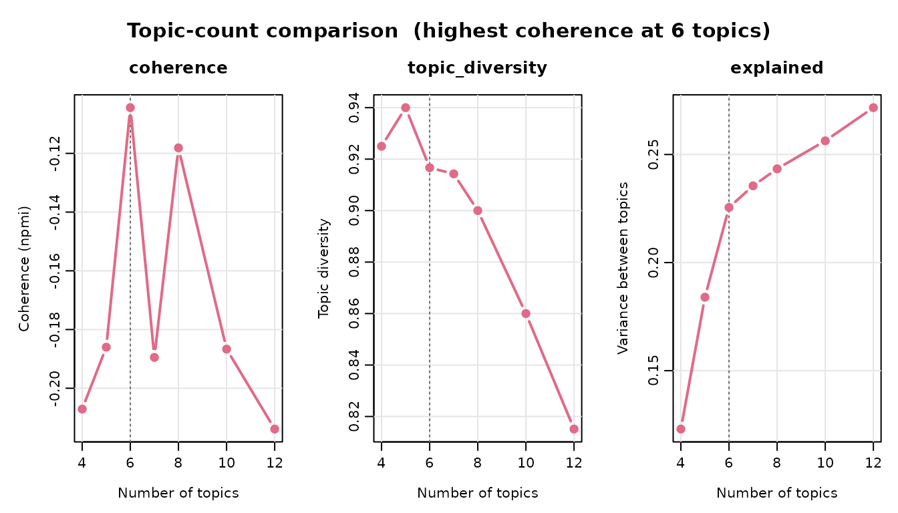
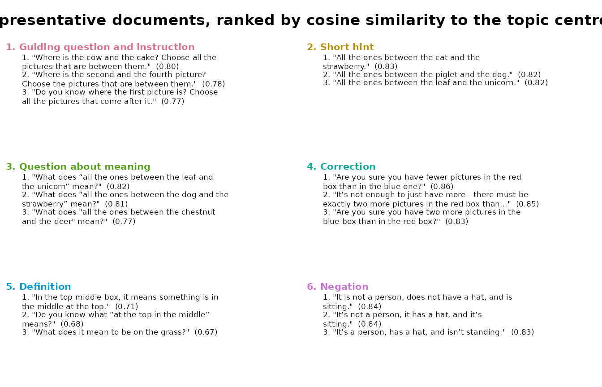
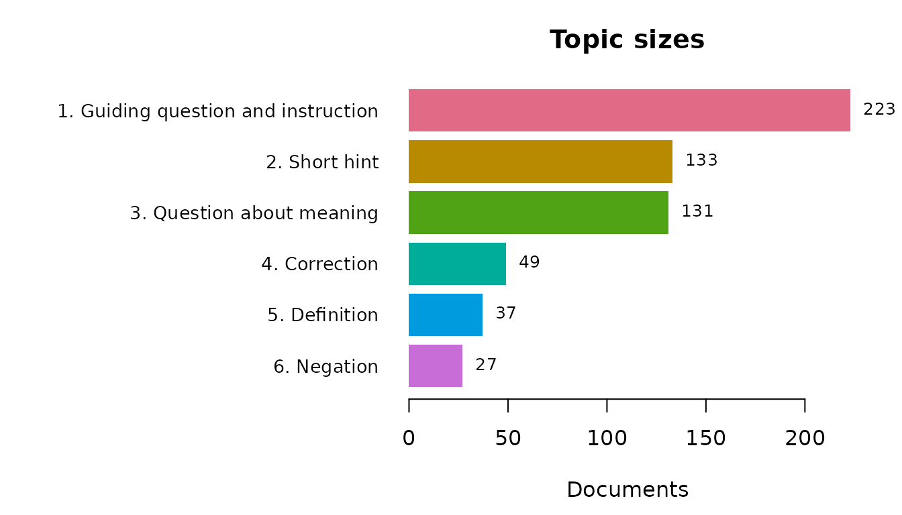
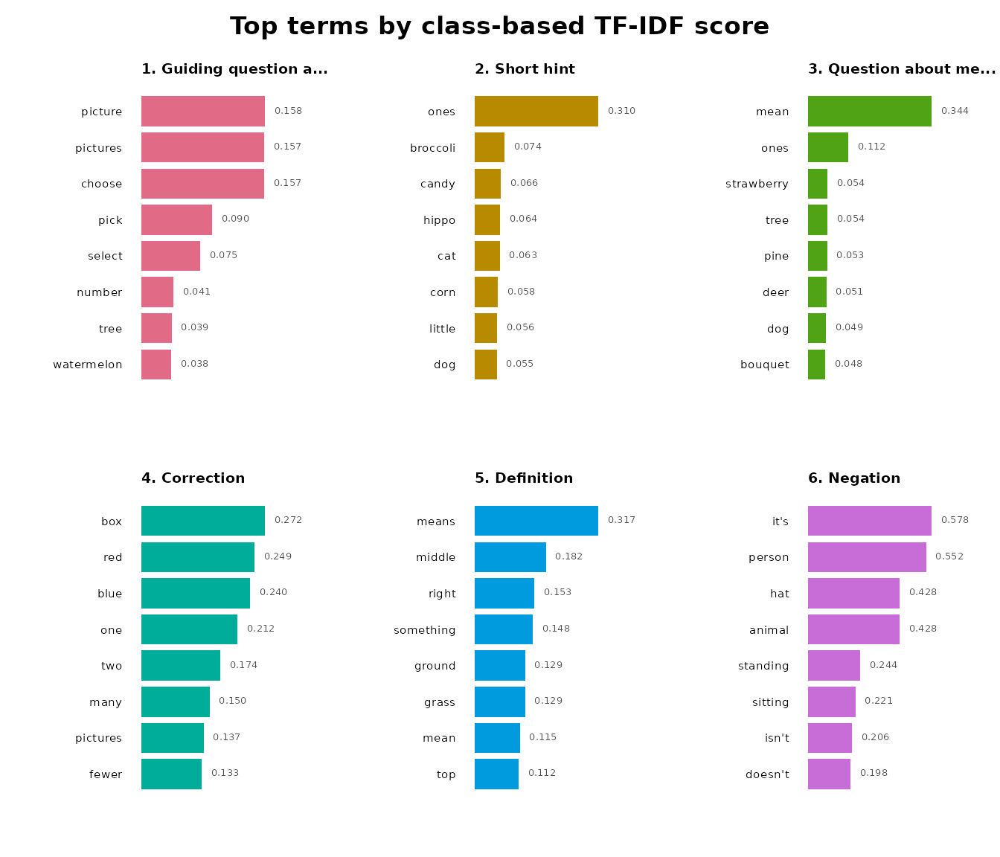
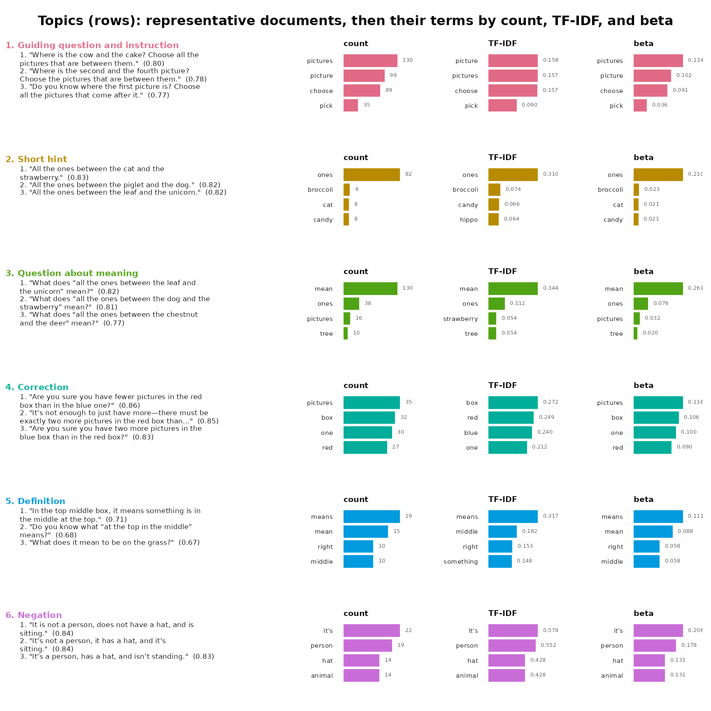

Semantic topic modeling with Sentence-BERT
Written by Mohammed Saqr and Sonsoles López-Pernas
Source:vignettes/sbert.Rmd
sbert.RmdEducational software now writes much of the feedback that learners read. An application that generates its hints, corrections and explanations with a language model produces thousands of messages, many of them near copies of one another, and the question an evaluator asks of such a corpus is what kinds of feedback it contains and how often each kind is given. Counting words does not answer that question. Frequent words and phrases recover the templates the generator reuses (“choose all the pictures”, “in the red box”), not what a message does for the learner: whether it hints, asks, corrects or explains.
Semantic topic modeling groups texts by meaning instead of by shared
words. Each text is encoded as a sentence embedding, a vector in which
texts with similar meaning lie close together even when they share few
words (Reimers & Gurevych, 2019). The embeddings are normalized to
unit length and partitioned by k-means (Lloyd, 1982), so that a topic is
a region of the embedding space. A topic is then described in two ways:
by the texts nearest its center, which show what its members say, and by
the words that are frequent in it and rare elsewhere, scored with
class-based TF-IDF (Grootendorst, 2022). The sbert package
computes the embeddings in R, without Python, and fits the topics
deterministically, so the same input always gives the same topics,
tables and figures.
Encoding needs a model that is downloaded once on request. This article does not download one: the embeddings of the messages it models are bundled with the package, and every analysis below runs on them. The step that would compute them is shown, not run.
library(sbert)
#> sbert 0.5.14: Sentence-BERT embeddings and topic models in R.
#> 14 pinned models (see models()); default: all-MiniLM-L6-v2.
#> A model is downloaded only on request, once, and verified by SHA-256.Data
feedback_translations holds 8,757 AI-generated feedback
messages from a mathematics learning application, written in ten source
languages and translated into English.
-
feedback: the message in its source language. Carried along with each modeled message, not modeled. -
translation: the English translation. The text that is modeled. -
n: added bydedupe(), the number of times the message occurs in the full corpus. Used to weight topic sizes.
Many messages repeat word for word. dedupe() keeps the
first occurrence of each distinct translation, with all its columns, and
counts its occurrences in n:
messages <- dedupe(feedback_translations, column = "translation")
nrow(messages)
#> [1] 8005
subset(messages, n >= 7, select = c(translation, n))
#> translation n
#> 127 Try again. 11
#> 305 How many pictures were there? Now you see three. How many are missing? 7
#> 712 The first picture. 7
#> 790 There must be another way. 7
#> 874 How many pictures were there? Now you see one. How many are missing? 7The corpus has 8,005 distinct translations. The most repeated message, “Try again.”, occurs 11 times, and four more messages occur 7 times each. Repetition is therefore moderate, but it is uneven, which matters when topic sizes are reported.
The analysis uses the first 600 distinct messages, whose embeddings
ship with the package as feedback_embeddings: row
i of that matrix is the embedding of row i of
corpus.
corpus <- head(messages, 600)
dim(feedback_embeddings)
#> [1] 600 384
with(corpus, sum(n))
#> [1] 740Each of the 600 messages is a vector of 384 numbers from the
all-MiniLM-L6-v2 model, and together they were shown 740
times. With a downloaded model, the same analysis starts from the text
alone, and topics() encodes it; this chunk is not run
here:
model_download()
topic_model <- topics(corpus, n_topics = 6, column = "translation")How many kinds of feedback are there?
There is no correct number of topics. compare_topics()
fits one model for each candidate count and reports, for each:
-
coherence: whether each topic’s top words occur together in the same messages, as normalized pointwise mutual information (NPMI; Bouma, 2009), from -1 to 1, averaged over topics. -
topic_diversity: the share of distinct words among all topics’ top-10 word lists; 1 when no two topics share a top word. -
explained: the share of the variation in the embeddings that the topics capture. It grows with every added topic, so it cannot choose the count on its own. -
converged: whether k-means reached a stable partition.
Coherence and diversity are computed from words, so they are a guide; the test of a count is whether the messages of each topic do the same thing, which the following sections check.
sweep <- compare_topics(corpus, column = "translation",
n_topics = c(4, 5, 6, 7, 8, 10, 12),
embeddings = feedback_embeddings)
sweep
#> <sbert_topic_sweep> 7 candidates, coherence measure: npmi
#> n_topics coherence topic_diversity explained converged
#> 4 -0.207 0.925 0.123 TRUE
#> 5 -0.186 0.940 0.184 TRUE
#> 6 -0.104 0.917 0.226 TRUE
#> 7 -0.189 0.914 0.236 TRUE
#> 8 -0.118 0.900 0.243 TRUE
#> 10 -0.187 0.860 0.256 TRUE
#> 12 -0.214 0.815 0.272 TRUE
#>
#> Fitted models retained: fitted(x, n_topics = 6)
plot(sweep)
Every candidate converged. Coherence is negative at every count,
because the messages are short and two content words rarely occur in the
same message, and it is highest at six topics (-0.104), with eight close
behind (-0.118). Six topics explain 22.6% of the variation in the
embeddings and keep a topic diversity of 0.917. summary()
states the same choice in one row:
summary(sweep)
#> Topic-count comparison: highest mean npmi coherence per level
#>
#> segment n_candidates min_topics max_topics best_n_topics coherence topic_diversity
#> document 7 4 12 6 -0.104 0.917
#> explained all_converged
#> 0.226 TRUEThe analysis proceeds with six topics. fitted() returns
the six-topic model that compare_topics() already fitted,
so nothing is refitted:
topic_model <- fitted(sweep, n_topics = 6)
topic_model
#> <sbert_topic_model>
#> documents: 600
#> topics: 6
#> model: precomputed embeddings
#> algorithm: deterministic k-means (Lloyd)
#> topic sizes: 223, 133, 131, 49, 37, 27
#> between/total SS: 22.6%What are the topics?
topic_sizes() lists the topics. The label
of each topic is the message closest to its center, cut at 60
characters, and n_documents counts its messages:
topic_sizes(topic_model)
#> topic label n_documents
#> 1 1 Where is the cow and the cake? Choose all the pictures... 223
#> 2 2 All the ones between the cat and the strawberry. 133
#> 3 3 What does “all the ones between the leaf and the... 131
#> 4 4 Are you sure you have fewer pictures in the red box than... 49
#> 5 5 In the top middle box, it means something is in the... 37
#> 6 6 It is not a person, does not have a hat, and is sitting. 27
#> proportion
#> 1 0.3717
#> 2 0.2217
#> 3 0.2183
#> 4 0.0817
#> 5 0.0617
#> 6 0.0450Reading the labels and the messages of each topic (shown in the next section) shows that the topics are not subjects but kinds of feedback, defined by what a message does for the learner:
- Guiding question and instruction. A question that makes the learner find something, followed by an order to act on it: Where is the cow and the cake? Choose all the pictures that are between them.
- Short hint. A fragment with no verb that restates the target: All the ones between the cat and the strawberry.
- Question about meaning. A question that asks the learner what a phrase means: What does “all the ones between the leaf and the unicorn” mean?
- Correction. A statement of what should be true, or a question that makes the learner check an answer: Are you sure you have fewer pictures in the red box than in the blue one?
- Definition. An explanation of what a word or phrase means: In the top middle box, it means something is in the middle at the top.
- Negation. A description built from what something is not, used to rule out answers: It is not a person, does not have a hat, and is sitting.
Topics 1, 2 and 3 concern the same exercise, finding the pictures between two others, and use the same words. The embeddings still separate them, because an instruction, a hint and a question do different things. Topics 3 and 5 both deal with meaning, but one asks the learner and the other tells them.
name_topics() gives the topics these names, one per
topic in topic order. The names replace the labels in every table and
plot that follows; nothing is refitted.
topic_model <- name_topics(topic_model, c(
"Guiding question and instruction", "Short hint",
"Question about meaning", "Correction", "Definition", "Negation"
))
topic_sizes(topic_model)
#> topic label n_documents proportion
#> 1 1 Guiding question and instruction 223 0.3717
#> 2 2 Short hint 133 0.2217
#> 3 3 Question about meaning 131 0.2183
#> 4 4 Correction 49 0.0817
#> 5 5 Definition 37 0.0617
#> 6 6 Negation 27 0.0450Instructions are the largest kind of feedback, with 223 of the 600 distinct messages (37.2%), and negations the smallest, with 27 (4.5%).
How typical are the example messages?
representatives() returns the messages of each topic
ranked by how typical they are. With rank = "distance" the
ranking is by the cosine distance from the message to its topic’s
center; margin is how much farther the message is from the
next closest topic. The text column is long, so the table is printed
with knitr::kable():
knitr::kable(representatives(topic_model, n = 3, rank = "distance"),
digits = 2)| topic | rank | document_id | text | distance | margin |
|---|---|---|---|---|---|
| 1 | 1 | 118 | Where is the cow and the cake? Choose all the pictures that are between them. | 0.20 | 0.28 |
| 1 | 2 | 474 | Where is the second and the fourth picture? Choose the pictures that are between them. | 0.22 | 0.19 |
| 1 | 3 | 368 | Do you know where the first picture is? Choose all the pictures that come after it. | 0.23 | 0.21 |
| 2 | 1 | 277 | All the ones between the cat and the strawberry. | 0.17 | 0.28 |
| 2 | 2 | 237 | All the ones between the piglet and the dog. | 0.18 | 0.30 |
| 2 | 3 | 226 | All the ones between the leaf and the unicorn. | 0.18 | 0.23 |
| 3 | 1 | 227 | What does “all the ones between the leaf and the unicorn” mean? | 0.18 | 0.29 |
| 3 | 2 | 87 | What does “all the ones between the dog and the strawberry” mean? | 0.19 | 0.29 |
| 3 | 3 | 479 | What does “all the ones between the chestnut and the deer” mean? | 0.23 | 0.29 |
| 4 | 1 | 218 | Are you sure you have fewer pictures in the red box than in the blue one? | 0.14 | 0.46 |
| 4 | 2 | 62 | It’s not enough to just have more—there must be exactly two more pictures in the red box than in the blue box. | 0.15 | 0.48 |
| 4 | 3 | 68 | Are you sure you have two more pictures in the blue box than in the red box? | 0.17 | 0.40 |
| 5 | 1 | 364 | In the top middle box, it means something is in the middle at the top. | 0.29 | 0.16 |
| 5 | 2 | 28 | Do you know what “at the top in the middle” means? | 0.32 | 0.15 |
| 5 | 3 | 74 | What does it mean to be on the grass? | 0.33 | 0.23 |
| 6 | 1 | 366 | It is not a person, does not have a hat, and is sitting. | 0.16 | 0.50 |
| 6 | 2 | 31 | It’s not a person, it has a hat, and it’s sitting. | 0.16 | 0.47 |
| 6 | 3 | 18 | It’s a person, has a hat, and isn’t standing. | 0.17 | 0.42 |
The most typical messages lie between 0.14 and 0.33 from their
centers. Corrections and negations are the tightest topics: their
nearest messages are within 0.17 of the center, and their margins (0.40
to 0.50) are the largest in the table, so these messages could belong to
no other kind of feedback. Definitions are the loosest: their closest
message is 0.29 from the center, and the topic mixes explanations of a
phrase with questions about it, the boundary it shares with topic 3. The
default, rank = "margin", ranks by margin
instead and favors messages that are unambiguous members of their
topic.
The plot shows the same messages, with the similarity to the center in parentheses:
plot(topic_model, type = "representatives", n_representatives = 3)
How large are the topics once repetition is counted?
n_documents counts distinct messages, so a message shown
four times counts once. Passing the name of the count column as
weights adds n_weighted and
weighted_share, which count every time a message was
shown:
topic_sizes(topic_model, weights = "n")
#> topic label n_documents proportion n_weighted weighted_share
#> 1 1 Guiding question and instruction 223 0.3717 267 0.3608
#> 2 2 Short hint 133 0.2217 162 0.2189
#> 3 3 Question about meaning 131 0.2183 138 0.1865
#> 4 4 Correction 49 0.0817 76 0.1027
#> 5 5 Definition 37 0.0617 57 0.0770
#> 6 6 Negation 27 0.0450 40 0.0541Corrections grow from 8.2% of the distinct messages to 10.3% of all messages shown, and questions about meaning shrink from 21.8% to 18.6%. The application repeated its corrections more often than its other kinds of feedback, so a count of distinct messages understates how much correcting it did.
plot(topic_model, type = "sizes")
What words does each topic use?
Words do not define these topics; the sentences do. The words a topic
uses more than the others still help to search the messages or to see
how a topic is phrased. terms() lists them; the
score is class-based TF-IDF, high for words frequent in
this topic and rare in the others:
terms(topic_model, n = 5)
#> topic label term rank score frequency beta
#> 1 1 Guiding question and instruction picture 1 0.1581 99 0.1017
#> 2 1 Guiding question and instruction pictures 2 0.1573 130 0.1336
#> 3 1 Guiding question and instruction choose 3 0.1571 89 0.0915
#> 4 1 Guiding question and instruction pick 4 0.0903 35 0.0360
#> 5 1 Guiding question and instruction select 5 0.0751 26 0.0267
#> 6 2 Short hint ones 1 0.3096 82 0.2103
#> 7 2 Short hint broccoli 2 0.0742 9 0.0231
#> 8 2 Short hint candy 3 0.0660 8 0.0205
#> 9 2 Short hint hippo 4 0.0638 8 0.0205
#> 10 2 Short hint cat 5 0.0628 8 0.0205
#> 11 3 Question about meaning mean 1 0.3436 130 0.2610
#> 12 3 Question about meaning ones 2 0.1124 38 0.0763
#> 13 3 Question about meaning strawberry 3 0.0545 9 0.0181
#> 14 3 Question about meaning tree 4 0.0538 10 0.0201
#> 15 3 Question about meaning pine 5 0.0526 8 0.0161
#> 16 4 Correction box 1 0.2724 32 0.1063
#> 17 4 Correction red 2 0.2490 27 0.0897
#> 18 4 Correction blue 3 0.2398 26 0.0864
#> 19 4 Correction one 4 0.2120 30 0.0997
#> 20 4 Correction two 5 0.1740 16 0.0532
#> 21 5 Definition means 1 0.3165 19 0.1111
#> 22 5 Definition middle 2 0.1818 10 0.0585
#> 23 5 Definition right 3 0.1531 10 0.0585
#> 24 5 Definition something 4 0.1485 6 0.0351
#> 25 5 Definition grass 5 0.1290 5 0.0292
#> 26 6 Negation it's 1 0.5781 22 0.2056
#> 27 6 Negation person 2 0.5521 19 0.1776
#> 28 6 Negation animal 3 0.4284 14 0.1308
#> 29 6 Negation hat 4 0.4284 14 0.1308
#> 30 6 Negation standing 5 0.2440 7 0.0654
plot(topic_model, type = "terms")
The words show why they make poor names. They describe what the messages are about, not what they do. The top words of the short hints, after ones, are names of pictures (broccoli, candy, hippo) that change from message to message, and nothing in them says that the topic is made of hints. The words of the negations (person, animal, hat) name the pictures, not the negation that defines the topic. Short hints and questions about meaning share the word ones, although one gives a hint and the other asks a question.
summary() adds the coherence of each topic’s top
words:
summary(topic_model)
#> Semantic topic model summary
#> documents: 600
#> topics: 6
#> model: precomputed embeddings
#> between/total SS: 22.6%
#> mean npmi coherence: -0.1044
#> topic diversity: 0.917 (top 10 terms)
#>
#> topic label n_documents proportion coherence
#> 1 Guiding question and instruction 223 0.37167 -0.2368
#> 2 Short hint 133 0.22167 -0.4150
#> 3 Question about meaning 131 0.21833 -0.2564
#> 4 Correction 49 0.08167 0.3011
#> 5 Definition 37 0.06167 -0.2043
#> 6 Negation 27 0.04500 0.1849Coherence is lowest for the short hints (-0.415), whose picture names
rarely recur together, and highest for the corrections (0.301), whose
messages repeat the same few words (box, red,
blue). To name topics by their three top words instead of a
message, fit with label = "terms".
The whole model in one figure
type = "fit" shows each topic’s example messages and,
beside them, its words, one row per topic:
plot(topic_model, type = "fit", n_terms = 4, n_representatives = 3)
The figure is the report of the analysis: six kinds of feedback, each with the messages that define it and the vocabulary that phrases it.
When to use which
| Question | Verb |
|---|---|
| How many topics, at which granularity? |
compare_topics(), summary(),
fitted()
|
| What are the topics and how large are they? |
topic_sizes(),
topic_sizes(weights = )
|
| What do the topics say? |
representatives(), name_topics()
|
| Which words phrase them? |
terms(), coherence(),
topic_diversity()
|
| Which topic does a new message belong to? |
predict(), topic_membership()
|
| What mix of topics is in a long document? |
topics(segment = "sentence"),
topic_gamma()
|
| Every table at once | as.data.frame(topic_model, what = ) |
Further reading
Vignettes
Guides
- Choosing the number of topics and the granularity
- Segmenting long documents
- Preparing and cleaning a corpus
- Describing and naming topics
- Assigning new documents and topic mixtures
- Models, the cache, and custom models
- Parallel and high-throughput topic modeling
- Verification: Python parity and determinism
Case studies
References
Bouma, G. (2009). Normalized (pointwise) mutual information in collocation extraction. Proceedings of GSCL, 31–40.
Grootendorst, M. (2022). BERTopic: Neural topic modeling with a class-based TF-IDF procedure. arXiv:2203.05794.
Lloyd, S. P. (1982). Least squares quantization in PCM. IEEE Transactions on Information Theory, 28(2), 129–137. https://doi.org/10.1109/TIT.1982.1056489
Reimers, N., & Gurevych, I. (2019). Sentence-BERT: Sentence embeddings using Siamese BERT-networks. Proceedings of EMNLP-IJCNLP 2019, 3982–3992. https://doi.org/10.18653/v1/D19-1410